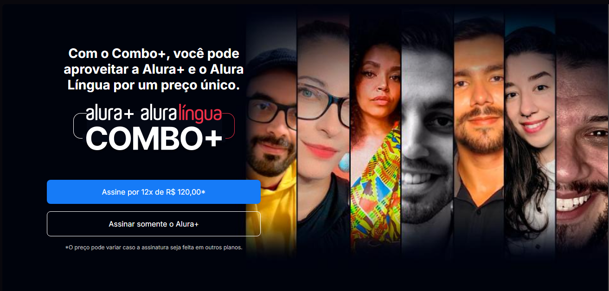
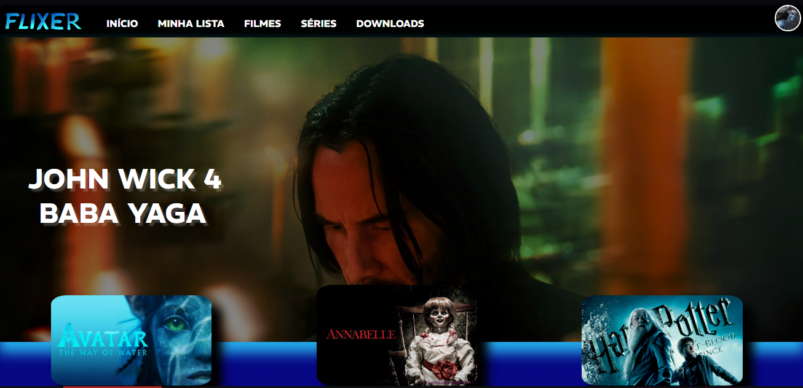
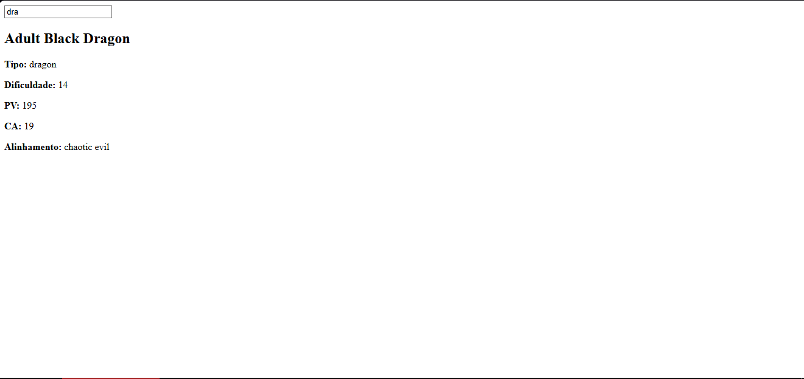
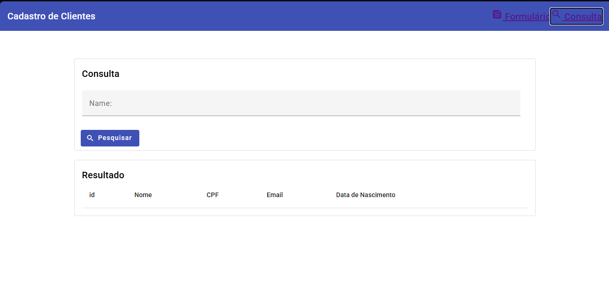

Desenvolvedor Front-End de interfaces modernas e criação de soluções que unem design e funcionalidade.
Sou um desenvolvedor apaixonado por tecnologia, desenvolvimento web e criação de soluções digitais.
Minha jornada começou aos 17 anos, quando iniciei meus estudos em programação através da Alura,
aprendendo lógica de programação, HTML, CSS e JavaScript enquanto desenvolvia meus primeiros projetos.
Aos 19 anos, ingressei na FATEC, onde aprofundei meus conhecimentos em desenvolvimento de software,
banco de dados, design de interfaces e tecnologias como Java, Spring Boot, React Native e Python.
Atualmente estou finalizando o 5º semestre da graduação e me preparando para concluir o último semestre.
Durante o 3º semestre, tive a oportunidade de ingressar profissionalmente na área de tecnologia em uma
empresa chamada GestãoTec. Desde
então, acumulo mais de um ano de experiência atuando com Angular em projetos reais, desenvolvendo
aplicações modernas, escaláveis e focadas na experiência do usuário.
Acredito que a tecnologia é uma ferramenta capaz de transformar ideias em soluções reais. Por isso,
estou sempre estudando novas tecnologias, aprimorando minhas habilidades e buscando desafios que me
permitam crescer tanto profissionalmente quanto pessoalmente. Meu objetivo é continuar evoluindo como
desenvolvedor e contribuir para projetos que façam a diferença.

Landing page desenvolvida durante estudos de HTML e CSS reproduzindo o serviço Combo+.
Acessar Projeto
Projeto inspirado na Netflix contendo trailers, catálogo e jogo da memória.
Acessar Projeto
Sistema para consulta de criaturas usando API externa do universo Dungeons & Dragons.
Acessar Projeto
Sistema de cadastro e busca de clientes desenvolvido com Angular.
Acessar ProjetoEstou aberto a oportunidades, projetos, networking e novos desafios na área de desenvolvimento.